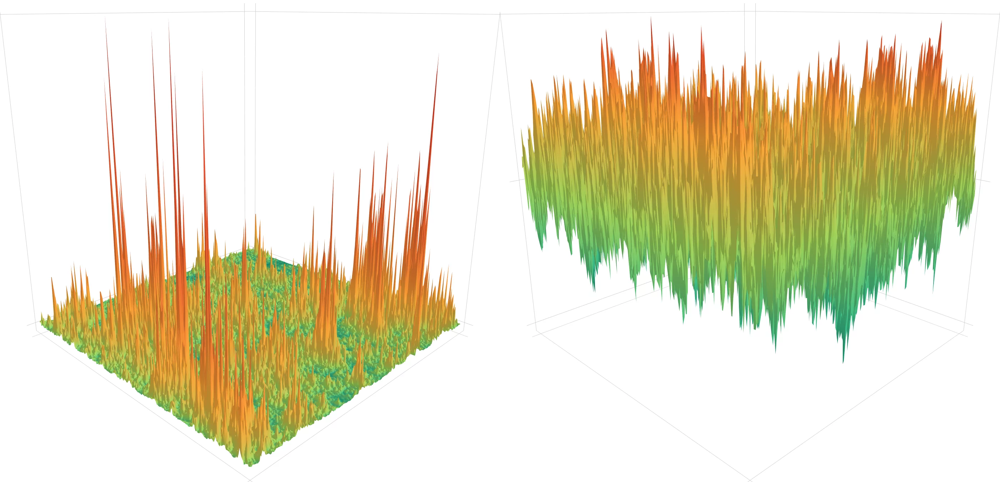

The critical 2D Stochastic Heat Flow and KPZ process
Numerical simulations of the critical 2D Stochastic Heat Flow (SHF, left) and KPZ process (right). The animation progressively zooms into the centre of the displayed pictures.


Click on the animation to enlarge it
The SHF simulation (left) shows the point-to-plane partition functions of 2D directed polymers as a function of the starting point, locally smoothed in space by averaging over 3×3 grid points. After time reversal, partition functions solve a discretised stochastic heat equation with constant initial data, providing an approximation of the SHF.
The polymer length is N = 50 000 and the disorder strength is tuned in the critical window with θ = 0. The initially displayed domain is diamond-shaped with vertices (±1032, 0) and (0, ±1032).
The KPZ simulation (right) shows the logarithm of the same point-to-plane partition functions, centred by subtracting its expected value (estimated by a spatial average over the initial displayed domain) and locally smoothed in space (by averaging over 3×3 grid points). After time reversal, log partition functions provide discretised KPZ solutions with zero initial data via the Cole–Hopf transform. Upon centring, which provides the required renormalisation, they approximate the critical 2D KPZ process.
See our paper The Critical 2D KPZ Process for more details.